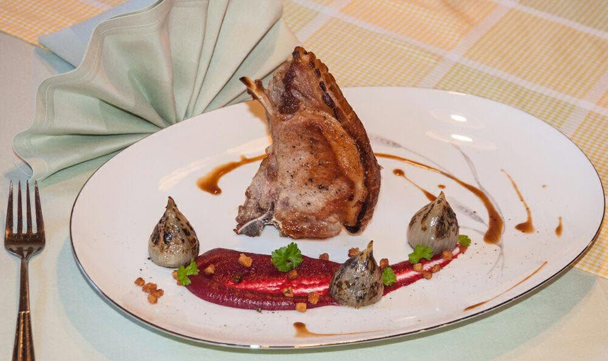

Fränkisch. Mit Charakter.
Gutbürgerliche Speisen, fränkische Spezialitäten und saisonale Abwechslung – für alle, die gerne mit Genuss einkehren.

FRÄNKISCHE KÜCHE. ECHTE GASTLICHKEIT.
Ein Stück Franken auf dem Teller.
Ein herzliches Willkommen in Helmbrechts.
GRÜSS GOTT IM GASTHOF ROSSNER
Ein Tisch, an dem man gerne zusammenkommt. Fränkische Spezialitäten, gutbürgerliche Küche und die Aromen der Saison. Dazu die persönliche Atmosphäre eines Hauses, das seit über einem Jahrhundert zur Familie gehört.
Ob für ein gemeinsames Essen, einen genussvollen Sonntag oder einen besonderen Anlass: Bei uns in Helmbrechts darf aus einer kleinen Pause eine richtig gute Zeit werden.
MIT APPETIT AUF FRANKEN
Fränkische Klassiker und saisonale Ideen.
Abwechslung, die Lust aufs Wiederkommen macht.
Für den kleinen Anlass und den großen Appetit.
EIN HAUS MIT PERSÖNLICHKEIT
Inhaber · Gasthof Roßner
Ein Familienbetrieb in vierter Generation – und ein Gastgeber, dem Sie persönlich begegnen. Heiko Roßner steht heute hinter dem Gasthof und seiner familiären Atmosphäre.
Hier treffen fränkische Wirtshauskultur und die Freude am gemeinsamen Essen aufeinander. Schön, wenn auch Sie mit am Tisch sitzen.
Lernen wir uns kennen ↗FÜR DIE MENSCHEN, DIE ZUSAMMENGEHÖREN
Ein Dankeschön ans Team. Ein gemeinsamer Jahresabschluss. Oder einfach ein Anlass, bei gutem Essen miteinander ins Gespräch zu kommen.
Fragen Sie Ihre Firmenfeier im Gasthof Roßner an. Termin, Gruppengröße und kulinarische Wünsche besprechen Sie direkt mit uns – persönlich und passend zu Ihrem Anlass.
Meine Feier anfragen ↗Unverbindlich anfragen · Verfügbarkeit nach AbspracheDARUM ROSSNER
Gutbürgerliche Speisen, fränkische Spezialitäten und saisonale Abwechslung – für alle, die gerne mit Genuss einkehren.
Ein Familienbetrieb in vierter Generation mit behaglicher Atmosphäre. Ein Haus mit Geschichte und einem Gastgeber mit Gesicht.
Ein gemeinsamer Tisch schafft Raum für Gespräche. Für Ihre Firmenfeier beginnt die Planung mit einem persönlichen Kontakt.
WIR FREUEN UNS AUF SIE
Reservieren Sie einen Tisch oder sprechen Sie mit uns über Ihre nächste Feier.
09252 / 5116 ↗info@gasthof-rossner.de ↗Inhaber Heiko Roßner
Hofer Straße 35
95233 Helmbrechts
Gut zu wissen
Montag ist Ruhetag. Aktuelle Küchenzeiten und Sonderöffnungen bitte telefonisch erfragen.